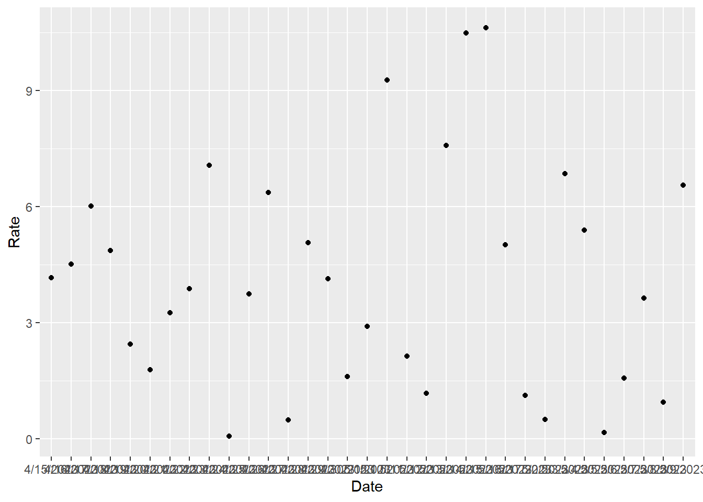
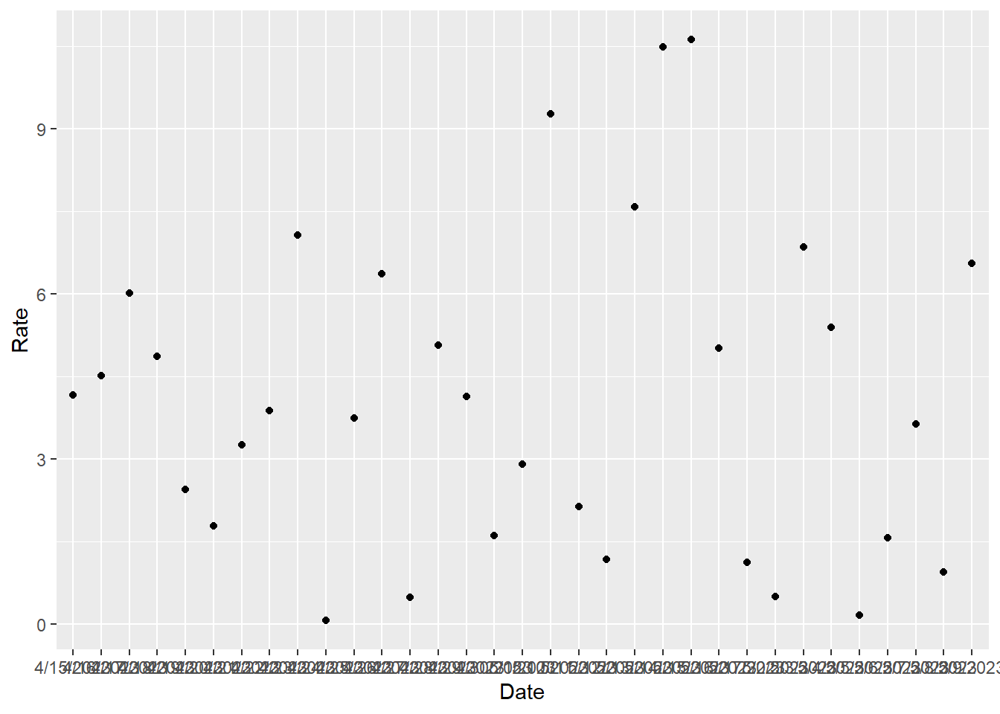

Warning: package 'ggplot2' was built under R version 4.2.3
The Boys is set in a universe where superpowered individuals are recognized as heroes by the general public and work for a powerful corporation known as Vought International that markets and monetizes them. Outside their heroic personas, most are corrupt and self-serving. The series primarily focuses on two groups: the Seven, Vought’s premier superhero team, and the Boys, vigilantes looking to bring down Vought and its corrupt superheroes.
| Season | Rotten Tomatoes Score | Metacritic Score |
|---|---|---|
| 1 | 85% | 74 |
| 2 | 97% | 80 |
| 3 | 98% | 77 |
Warning: package 'ggplot2' was built under R version 4.2.3